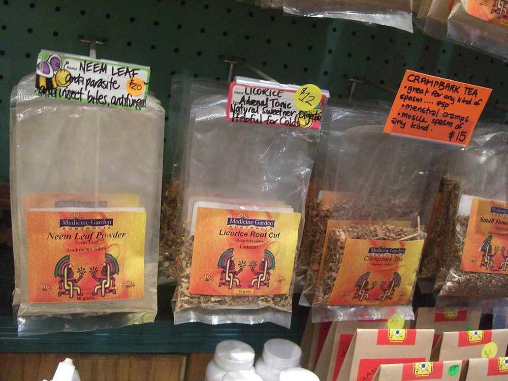

Prep10 min
Cook0 min
Active10 min
Serves1
Difficultyeasy
Allergens in Neem Tulsi Shot: none of the ten listed below.
Ingredients
Quantities for 1.
- 15 tender leaves Neemyoung leaves only; old ones are unbearable
- 15 leaves Tulsithe tulsi is there to make the neem possible
- 2 tsp Honey
- ½, juiced Lemon
- a pinch Black Pepperoptional
Cookware
blender
Checked against the ingredient list for ten allergens: milk, egg, fish, crustaceans, tree nuts, peanuts, sesame, mustard, soy and gluten. Brands vary, so read the label on anything new to you.
Method
- Wash the neem and tulsi leaves well.
- Blend with 100ml water until the leaves break down entirely.
- Strain twice through muslin. Any leaf fragment left in will make it worse.
- Stir in the honey, lemon and pepper. Drink in one go; it does not improve with sipping.
Storage
Same day. Neem juice darkens and turns harsher within hours.
More like this: Quick Indian recipes (30 min) · Vegetarian Indian recipes · Gluten-free Indian recipes · Dairy-free Indian recipes · No onion no garlic recipes · Wellness recipes
Times, yields, allergens and nutrition are guidance. Use your own judgement on doneness and on storing. More in About.